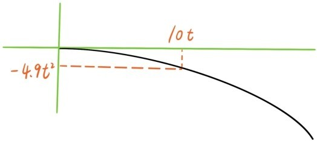
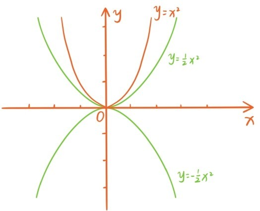
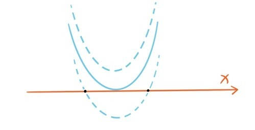

一块小石头被水平地抛出后，小石头划过的运动轨迹称为抛物线。这时小石头的运动可以分解为水平方向的匀速运动和竖直方向的自由落体运动。如果假设小石头是以10米/秒的速度被水平抛出，那么t秒时刻，小石头水平方向运动的距离就是10t，竖直方向自由下落的距离为4.9t2，它所处的位置点就是(10t,-4.9t2)，这个点总会落在函数或者方程y=-0.049x2的图象上。

所以，将函数或者方程y=ax2(a≠0)的图象称为抛物线。注意，在绕y轴旋转180°的平面变换
之下，方程y=ax2保持不变，所以y轴是抛物线y=ax2的对称轴。

当a>0时，抛物线y=ax2的开口是朝上的，而且a越大抛物线开口越小。当a<0时，开口是朝下。实际上抛物线y=ax2和抛物线y=-ax2是关于x轴对称的。
比y=ax2更一般的，是二次多项式所对应的函数y=ax2+2bx+c(a≠0)，我们称其为二次函数，例如y=-x2+2x+1，y=x2+2x-1。二次函数y=ax2+2bx+c的图象其实也是抛物线。比如函数y=x2+2x-1，可以写成方程y+2=(x+1)2，它的图象是由抛物线y=x2通过平移变换(x,y)→(x-1,y-2)得到。
更一般地，任何二次函数y=ax2+2bx+c的图象都可以通过抛物线y=ax2平移得到。在左右平移变换
之下，抛物线y=ax2变成函数的图象，对称轴变成。再做一次上下平移变换
之后，就变成y=ax2+2bx+c的图象，对称轴还是。
这也启发我们给出一元二次方程ax2+2bx+c=0的一种解法，方程可以转化为，进一步简化为。
这种一元多项式方程的解称为根。当b2-ac>0时，两边开根号得出方程的两个不同根，抛物线与x轴有两个交点。这时一元多项式有分解式为ax2+2bx+c=a(x-x1)(x-x2)。
当b2-ac=0时，得到两个相等根，抛物线与x轴只有一个交点。这时仍然有分解式ax2+2bx+c=a(x-x1)2。
当b2-ac<0时，由于任何实数的平方都不可能是负数，所以方程无实根，抛物线与x轴没有交点。这时ax2+2bx+c不能分解为两个一次多项式的乘积，因为如果有分解式ax2+2bx+c=a(x-x1)(x-x2)，那么将x=x1或x2代入就说明x1和x2是方程的根。
也可以从二次函数y=ax2+2bx+c的图象来看方程ax2+2bx+c=0的根，可以先假设a>0。上面讲过，y=ax2+2bx+c的图象都可以通过对抛物线y=ax2先做一次左右平移变换，然后再做上下平移（x，y）→得到。抛物线y=ax2开口朝上，而且与x轴只有一个交点，也就是只有一个零点。左右平移并不改变抛物线y=ax2的零点数量，但上下平移却会改变。当b2-ac>0时，平面变换（x，y）→是向下平移，平移后的抛物线有两个零点；当b2-ac<0时，平面变换（x，y）→是向上平移，平移后的抛物线没有零点。a<0的情况也可以类似说明。

Δ=b2-ac为方程ax2+2bx+c=0或者抛物线y=ax2+bx+c的判别式。用上一节的记号，判别式这个非常重要的量可以写作Δ=。
利用上面方法具体求解一个一元二次方程x2+4x+3=0。希望把等号左边转化为(x+a)2+b的形式，根据完全平方公式，应该取a=2，b=-1。这时方程变成(x+2)2=1，最终解为x=-1或-3，并得到分解式x2+4x+3=(x+1)(x+3)。这种方法称为配方法。
将函数y=ax2+2bx+c转化为y=后，容易看出，当a>0时，y=ax2+2bx+c≥，等号成立当且仅当x=，也就是说函数y=ax2+2bx+c在处取得最小值。同理，当a<0时，函数y=ax2+2bx+c在处取得最大值。
提问时间
5.4.1 解方程x2+6x+8=0；x2+4x-5=0；x2+4x+6=0。
5.4.2 分解多项式y2+2y-3与z2+z-6。
5.4.3 请描述方程x=2y2的图象，并指出它与抛物线y=2x2的关系。
5.4.4 请问函数y=2x2-4x+3的最小值是多少，在何处取得最小值？
5.4.5 求点(2,1)到直线y=2x+1的距离。